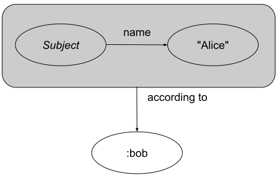

The Resource Description Framework (RDF) is a framework for
representing information in the Web.
This document defines an abstract syntax (a data model)
which serves to link all RDF-based languages and specifications.
The abstract syntax has two key data structures:
RDF graphs are sets of subject-predicate-object triples,
where the elements may be IRIs, blank nodes, or datatyped literals.
They are used to express descriptions of resources.
RDF datasets are used to organize collections of RDF graphs,
are comprised of a default graph and zero or more named graphs.
RDF 1.2 Concepts introduces key concepts and terminology for RDF 1.2, discusses
datatyping, and the handling of fragment identifiers in IRIs within
RDF graphs.
This document is part of the RDF 1.2 document suite.
It is the central RDF 1.2 specification and defines the core RDF concepts.
Test suites and implementation reports of a number of RDF 1.2
specifications that build on this document are available through the
[[[RDF11-TESTCASES]]] document [[RDF11-TESTCASES]].
RDF 1.2 Concepts is an update to [[RDF11-CONCEPTS]],
which was itself, an update to [[RDF-CONCEPTS-20040210]].
Determine how to reference 1.2 test cases.
Introduction
The Resource Description Framework (RDF) is a framework
for representing information in the Web.
This document defines an abstract syntax (a data model)
which serves to link all RDF-based languages and specifications,
including:
the formal model-theoretic semantics for RDF [[RDF12-SEMANTICS]];
serialization syntaxes for storing and exchanging RDF such as [[[RDF12-TURTLE]]] [[RDF12-TURTLE]]
and [[[JSON-LD11]]] [[JSON-LD11]];
the [[[SPARQL12-QUERY]]] [[SPARQL12-QUERY]];
the [[[RDF12-SCHEMA]]] [[RDF12-SCHEMA]].
Graph-based Data Model
The core structure of the abstract syntax is a set of
triples, each consisting of a subject,
a predicate and an object. A set of such triples is called
an RDF graph. An RDF graph can be visualized as a node and
directed-arc diagram, in which each triple is represented as a
node-arc-node link.
An RDF graph with two nodes (Subject and Object) and a triple connecting them (Predicate)
Any IRI or literal denotes
something in the world (the "universe of discourse").
These things are called
resources. Anything can be a resource,
including physical things, documents, abstract concepts, numbers
and strings; the term is synonymous with "entity" as it is used in
the RDF Semantics specification [[RDF12-SEMANTICS]].
The resource denoted by an IRI is called its referent, and the
resource denoted by a literal is called its
literal value. Literals have
datatypes that define the range of possible
values, such as strings, numbers, and dates. Special kind of literals,
language-tagged strings, denote
plain-text strings in a natural language.
Asserting an RDF triple says that some relationship,
indicated by the predicate, holds between the
resourcesdenoted by
the subject and object. This statement corresponding
to an RDF triple is known as an RDF statement.
The predicate itself is an IRI and denotes a property,
that is, a resource that can be thought of as a binary relation.
(Relations that involve more than two entities can only be
indirectly
expressed in RDF [[SWBP-N-ARYRELATIONS]].)
Unlike IRIs and literals,
blank nodes do not identify specific
resources. Statements
involving blank nodes say that something with the given relationships
exists, without explicitly naming it.
A quoted triple is not necessarily asserted, allowing
statements to be made about other statements that may not be
asserted within an RDF graph.
This allows statements to be made about relationships that may be contradictory.
For a quoted triple to be asserted,
it must also appear in a graph as an asserted triple.
The following diagram represents a statement with an unasserted quoted triple
as the subject.

An RDF graph containing a triple that references an unasserted quoted triple (with grey background) as the subject.
A variation on the graph shown in can be described
where the quoted triple is also asserted.
An RDF graph containing two triples where one of them contains the other as the subject;
hence, that other triple is both quoted and asserted.
Note that a quoted triple may also have a quoted triple as its subject or object.
This issue considers the potential for additional terminology related to quoted triples.
The Referent of an IRI
The resourcedenoted by an IRI
is also called its referent. For some IRIs with particular
meanings, such as those identifying XSD datatypes, the referent is
fixed by this specification. For all other IRIs, what exactly is
denoted by any given IRI is not defined by this specification. Other
specifications may fix IRI referents, or apply other constraints on
what may be the referent of any IRI.
Guidelines for determining the referent of an IRI are
provided in other documents, like
[[[WEBARCH]]] [[WEBARCH]]
and [[[COOLURIS]]] [[COOLURIS]].
A very brief, informal, and partial account follows:
By design, IRIs have global scope. Thus, two different appearances of an IRI
denote the same resource. Violating this principle constitutes
an IRI collision [[WEBARCH]].
By social convention, the
IRI owner
[[WEBARCH]] gets to say what the intended (or usual)
referent of an IRI is. Applications and users need not
abide by this intended denotation, but there may be a loss of
interoperability with other applications and users if they do
not do so.
The IRI owner can establish the intended referent
by means of a specification or other document that explains
what is denoted. For example, the
[[[VOCAB-ORG]]] [[VOCAB-ORG]]
specifies the intended referents of various IRIs that start with
http://www.w3.org/ns/org#.
A good way of communicating the intended referent
is to set up the IRI so that it
dereferences [[WEBARCH]]
to such a document.
Such a document can, in fact, be an RDF document
that describes the denoted resource by means of
RDF statements.
Perhaps the most important characteristic of IRIs
in web architecture is that they can be
dereferenced,
and hence serve as starting points for interactions with a remote server.
This specification is not concerned with such interactions.
It does not define an interaction model. It only treats IRIs as globally
unique identifiers in a graph data model that describes resources.
However, those interactions are critical to the concept of
[[[LINKED-DATA]]], [[LINKED-DATA]],
which makes use of the RDF data model and serialization formats.
RDF Vocabularies and Namespace IRIs
An RDF vocabulary is a collection of IRIs
intended for use in RDF graphs. For example,
the IRIs documented in [[RDF12-SCHEMA]] are the RDF Schema vocabulary.
RDF Schema can itself be used to define and document additional
RDF vocabularies. Some such vocabularies are mentioned in the
Primer [[RDF12-PRIMER]].
The IRIs in an RDF vocabulary often begin with
a common substring known as a namespace IRI.
Some namespace IRIs are associated by convention with a short name
known as a namespace prefix. Some examples:
In some serialization formats it is common to abbreviate IRIs
that start with namespace IRIs by using a
namespace prefix in order to assist readability. For example, the IRI
http://www.w3.org/1999/02/22-rdf-syntax-ns#XMLLiteral
would be abbreviated as rdf:XMLLiteral.
Note however that these abbreviations are not valid IRIs,
and must not be used in contexts where IRIs are expected.
Namespace IRIs and namespace prefixes are not a formal part of the
RDF data model. They are merely a syntactic convenience for
abbreviating IRIs.
The term “namespace” on its own does not have a
well-defined meaning in the context of RDF, but is sometimes informally
used to mean “namespace IRI” or “RDF vocabulary”.
RDF and Change over Time
The RDF data model is atemporal: RDF graphs
are static snapshots of information.
However, RDF graphs can express information
about events and about temporal aspects of other entities,
given appropriate vocabulary terms.
Since RDF graphs are defined as mathematical
sets, adding or removing triples from an
RDF graph yields a different RDF graph.
We informally use the term RDF source to refer to a
persistent yet mutable source or container of
RDF graphs. An RDF source is a resource
that may be said to have a state that can change over time.
A snapshot of the state can be expressed as an RDF graph.
For example, any web document that has an RDF-bearing representation
may be considered an RDF source. Like all resources, RDF sources may
be named with IRIs and therefore described in
other RDF graphs.
Intuitively speaking, changes in the universe of discourse
can be reflected in the following ways:
Literals, by design, are constants and
never change their value.
A relationship that holds between two resources
at one time may not hold at another time.
RDF sources may change their state over time.
That is, they may provide different RDF graphs
at different times.
Some RDF sources may, however, be immutable
snapshots of another RDF source, archiving its state at some
point in time.
Working with Multiple RDF Graphs
As RDF graphs are sets of triples, they can be
combined easily, supporting the use of data from
multiple sources. Nevertheless, it is sometimes desirable to work
with multiple RDF graphs while keeping their contents separate.
RDF datasets support this requirement.
An RDF dataset is a collection of
RDF graphs. All but one of these graphs have
an associated IRI or blank node. They are called
named graphs, and the IRI or blank node
is called the graph name.
The remaining graph does not have an associated IRI, and is called
the default graph of the RDF dataset.
There are many possible uses for RDF datasets.
One such use is to hold snapshots of multiple
RDF sources.
Equivalence, Entailment and Inconsistency
An RDF triple encodes a statement—a
simple logical expression, or claim about the world.
An RDF graph is the conjunction (logical AND) of
its triples. The precise details of this meaning of RDF triples and graphs are
the subject of the RDF Semantics specification [[RDF12-SEMANTICS]], which yields the
following relationships between RDF graphs:
Entailment
An RDF graphA entails another RDF graph B
if every possible arrangement of the world
that makes A true also makes B true. When A
entails B, if the truth of A is presumed or demonstrated
then the truth of B is established.
Equivalence
Two RDF graphsA and B
are equivalent if they make the same claim about the world.
A is equivalent to B if and only if
AentailsB and
B entails A.
Inconsistency
An RDF graph is inconsistent if it contains
an internal contradiction. There is no possible arrangement
of the world that would make the expression true.
An entailment regime [[RDF12-SEMANTICS]] is a specification that
defines precise conditions that make these relationships hold.
RDF itself recognizes only some basic cases of entailment, equivalence
and inconsistency. Other specifications, such as
[[[RDF-SCHEMA]]] [[RDF-SCHEMA]]
and OWL 2
[[OWL2-OVERVIEW]], add more powerful entailment regimes,
as do some domain-specific vocabularies.
This specification does not constrain how implementations
use the logical relationships defined by
entailment regimes.
Implementations may or may not detect
inconsistencies, and may make all,
some or no entailed information
available to users.
RDF Documents and Syntaxes
An RDF document is a document that encodes an
RDF graph or RDF dataset in a concrete RDF syntax,
such as Turtle [[RDF12-TURTLE]], RDFa [[RDFA-PRIMER]], JSON-LD [[JSON-LD11]], or
TriG [[RDF12-TRIG]]. RDF documents enable the exchange of RDF graphs and RDF
datasets between systems.
This specification, RDF 1.2 Concepts and Abstract Syntax,
defines a data model and related terminology for use in
other specifications, such as
concrete RDF syntaxes,
API specifications, and query languages.
Implementations cannot directly conform to
RDF 1.2 Concepts and Abstract Syntax,
but can conform to such other specifications that normatively
reference terms defined here.
This specification establishes two conformance levels:
Full conformance
supports graphs and datasets
containing quoted triples.
Concrete syntaxes in which such graphs and datasets can be expressed include
[[RDF12-N-TRIPLES]], [[RDF12-N-QUADS]], [[RDF12-TURTLE]], and [[RDF12-TRIG]].
The conformance levels described above are tentative,
and still the subject of group discussion. An alternative to conformance
levels, "profiles", may be adopted instead, abandoned, or described in
another specification.
Strings in RDF
RDF uses Unicode [[Unicode]] as the fundamental representation for string values.
Within this, and related specifications, the term string,
or RDF string,
is used to describe an ordered sequence of zero or more
Unicode code points
which are Unicode scalar values.
Unicode scalar values do not include the
surrogate code points.
Note that most concrete RDF syntaxes require the use
of the UTF-8 character encoding [[!RFC3629]],
and use the `\u0000` or `\U00000000` forms to express certain non-character values.
A string is identical to another string if it consists of the same sequence of code points.
An implementation MAY determine string equality by comparing the
code units of two strings
that use the same Unicode character encoding
(UTF-8 or UTF-16) without decoding the string into a
Unicode code point sequence.
If |t| and t' are RDF triples,
|s| is an IRI or a blank node,
|p| is an IRI, and
|o| is an IRI, a blank node, or a literal,
then (|t|, |p|, |o|), (|s|, |p|, |t|), and (|t|, |p|, t') are RDF triples.
Given a triple (|s|, |p|, |o|),
|s| is called the subject of the triple,
|p| is called the predicate of the triple, and
|o| is called the object of the triple.
IRIs, literals,
blank nodes, and quoted triples are distinct and distinguishable.
For example, http://example.org/ as a string literal
is equal to neither http://example.org/ as an IRI,
nor a blank node with the blank node identifierhttp://example.org/.
The set of nodes of an RDF graph
is the set of subjects and objects of triples in the graph.
It is possible for a predicate IRI to also occur as a node in
the same graph.
An IRI
(Internationalized Resource Identifier) within an RDF graph
is a string that conforms to the syntax
defined in RFC 3987 [[!RFC3987]].
For convenience, a complete [[ABNF]] grammar
from [[RFC3987]] is provided in .
IRIs in the RDF abstract syntax MUST be resolved
per [[RFC3986]],
and MAY contain a fragment identifier.
IRI equality:
Two IRIs are the same if and only if they consist of the same sequence of
Unicode code points,
as in Simple String Comparison in
section 5.3.1 of [[!RFC3987]].
(This is done in the abstract syntax, so the IRIs are resolved
IRIs with no escaping or encoding.)
Further normalization MUST NOT be performed before this comparison.
URIs and IRIs:
IRIs are a generalization of
URIs
[[RFC3986]] that permits a wider range of Unicode characters [[UNICODE]].
Every URI and URL is an IRI, but not every IRI is an URI.
In RDF, IRIs are used as IRI references, as defined in [[RFC3987]]
section 1.3.
An IRI reference is common usage of an Internationalized Resource Identifier.
An IRI reference refers to either a resolved IRI or relative IRI reference,
as described by the IRI-reference production in .
The abstract syntax uses only fully resolved IRIs.
When IRIs are used in operations that are only
defined for URIs, they must first be converted according to
the mapping defined in
section 3.1
of [[!RFC3987]]. A notable example is retrieval over the HTTP
protocol. The mapping involves UTF-8 encoding of non-ASCII
characters, %-encoding of octets not allowed in URIs, and
Punycode-encoding of domain names.
URLs:
The [[[URL]]] is largely compatible with [[RFC3987]] IRIs,
but is based on a processing model important for implementation
within web browsers and are not described using an [[ABNF]] grammar.
Relative IRI references:
Some concrete RDF syntaxes permit
relative IRI references as a convenient shorthand
that allows authoring of documents independently from their final
publishing location.
Relative IRI references must be
resolved against a
base IRI.
Therefore, the RDF graph serialized in such syntaxes is well-defined only
if a base IRI
can be established [[RFC3986]].
IRI normalization:
Interoperability problems can be avoided by minting
only IRIs that are normalized according to
Section 5
of [[!RFC3987]]. Non-normalized forms that are best avoided
include:
Uppercase characters in scheme names and domain names
Percent-encoding of characters where it is not
required by IRI syntax
Explicitly stated HTTP default port
(http://example.com:80/);
http://example.com/ is preferable
Completely empty path in HTTP IRIs
(http://example.com);
http://example.com/ is preferable
“/./” or “/../” in the path
component of an IRI
Lowercase hexadecimal letters within percent-encoding
triplets (“%3F” is preferable over
“%3f”)
Punycode-encoding of Internationalized Domain Names
in IRIs [[RFC3492]]
a datatype IRI, being an IRI
identifying a datatype that determines how the lexical form maps
to a literal value, and
if and only if the datatype IRI is
http://www.w3.org/1999/02/22-rdf-syntax-ns#langString, a
non-empty language tag as defined by [[!BCP47]]. The
language tag MUST be well-formed according to
section 2.2.9
of [[!BCP47]].
A literal is a language-tagged string if the third element
is present. Lexical representations of language tags MAY be converted
to lower case. The value space of language tags is always in lower
case.
Please note that concrete syntaxes MAY support
simple literals consisting of only a
lexical form without any datatype IRI or language tag.
Simple literals are syntactic sugar for abstract syntax
literals
with the datatype IRIhttp://www.w3.org/2001/XMLSchema#string
(which is commonly abbreviated as xsd:string).
Similarly, most concrete syntaxes represent
language-tagged strings without
the datatype IRI because it always equals
http://www.w3.org/1999/02/22-rdf-syntax-ns#langString (rdf:langString).
Otherwise, the literal is ill-typed and no literal value can be
associated with the literal. Such a case produces a semantic
inconsistency but is not syntactically ill-formed.
Implementations MUST accept ill-typed literals and produce RDF
graphs from them. Implementations MAY produce warnings when
encountering ill-typed literals.
Literal term equality: Two literals are term-equal (the same
RDF literal) if and only if the two lexical forms,
the two datatype IRIs, and the two
language tags (if any) compare equal,
using case sensitive matching
(see description of string comparison in ).
Thus, two literals can have the same value
without being the same RDF term. For example:
Blank nodes are disjoint from
IRIs and literals. Otherwise,
the set of possible blank nodes is arbitrary. RDF makes no reference to
any internal structure of blank nodes.
Blank node identifiers
are local identifiers that are used in some
concrete RDF syntaxes
or RDF store implementations.
They are always locally scoped to the file or RDF store,
and are not persistent or portable identifiers
for blank nodes. Blank node identifiers are not
part of the RDF abstract syntax, but are entirely dependent
on the concrete syntax or implementation. The syntactic restrictions
on blank node identifiers, if any, therefore also depend on
the concrete RDF syntax or implementation. Implementations that handle blank node
identifiers in concrete syntaxes need to be careful not to create the
same blank node from multiple occurrences of the same blank node identifier
except in situations where this is supported by the syntax.
The term "blank node label" is sometimes used informally
as an alternative to the term blank node identifier.
This alternative was also used in earlier versions of
some RDF-related specifications such as [[SPARQL11-QUERY]].
In the interest of consistency, the use of this alternative
term is discouraged now.
Replacing Blank Nodes with IRIs
Blank nodes do not have identifiers in the RDF abstract syntax. The
blank node identifiers introduced
by some concrete syntaxes have only
local scope and are purely an artifact of the serialization.
In situations where stronger identification is needed, systems MAY
systematically replace some or all of the blank nodes in an RDF graph
with IRIs. Systems wishing to do this SHOULD
mint a new, globally
unique IRI (a Skolem IRI) for each blank node so replaced.
This transformation does not appreciably change the meaning of an
RDF graph, provided that the Skolem IRIs do not occur anywhere else.
It does however permit the possibility of other graphs
subsequently using the Skolem IRIs, which is not possible
for blank nodes.
Systems may wish to mint Skolem IRIs in such a way that they can
recognize the IRIs as having been introduced solely to replace blank
nodes. This allows a system to map IRIs back to blank nodes
if needed.
Systems that want Skolem IRIs to be recognizable outside of the system
boundaries SHOULD use a well-known IRI [[RFC5785]] with the registered
name genid. This is an IRI that uses the HTTP or HTTPS scheme,
or another scheme that has been specified to use well-known IRIs; and whose
path component starts with /.well-known/genid/.
For example, the authority responsible for the domain
example.com could mint the following recognizable Skolem IRI:
RFC 5785 [[RFC5785]] only specifies well-known URIs,
not IRIs. For the purpose of this document, a well-known IRI is any
IRI that results in a well-known URI after IRI-to-URI mapping [[!RFC3987]].
Graph Comparison
Two
RDF graphsG and G' are
isomorphic
(that is, they have an identical form)
if there is a bijection M between the sets of nodes of the two
graphs, such that:
M maps blank nodes to blank nodes.
M(lit)=lit for all RDF literalslit which
are nodes of G.
With this definition, M shows how each blank node
in G can be replaced with
a new blank node to give G'. Graph isomorphism
is needed to support the RDF Test Cases [[RDF11-TESTCASES]] specification.
RDF Datasets
An RDF dataset is a collection of
RDF graphs, and comprises:
Exactly one default graph, being an RDF graph.
The default graph does not have a name and MAY be empty.
Zero or more named graphs.
Each named graph is a pair consisting of an IRI or a blank node
(the graph name), and an RDF graph.
Graph names are unique within an RDF dataset.
Despite the use of the word “name” in “named graph”, the
graph name is not required to denote the graph. It is
merely syntactically paired with the graph. RDF does not place any
formal restrictions on what resource the graph name may denote,
nor on the relationship between that resource and the graph.
A discussion of different RDF dataset semantics can be found in
[[RDF11-DATASETS]].
Some RDF dataset implementations do not
track empty named graphs. Applications
can avoid interoperability issues by not ascribing importance to
the presence or absence of empty named graphs.
SPARQL 1.2 [[SPARQL12-CONCEPTS]] also defines the concept of an RDF
Dataset. The definition of an RDF Dataset in SPARQL 1.1 and this
specification differ slightly in that this specification allows RDF
Graphs to be identified using either an IRI or a blank node. SPARQL 1.1
Query Language only allows RDF Graphs to be identified using an IRI.
Existing SPARQL implementations might not allow blank nodes to be used
to identify RDF Graphs for some time, so their use can cause
interoperability problems.
Skolemizing blank nodes used as
graph names can be used to overcome these interoperability problems.
RDF Dataset Comparison
Two RDF datasets
(the RDF dataset D1 with default graph DG1 and any named
graph NG1 and the RDF dataset D2 with default graph
DG2 and any named graph NG2)
are dataset-isomorphic if and only if
there is a bijection M between the nodes, triples and graphs in
D1 and those in D2 such that:
For every triple <s p o>, M(<s, p, o>)=
<M(s), M(p), M(o)>;
For every graph G={t1, ..., tn},
M(G)={M(t1), ..., M(tn)};
DG2 = M(DG1); and
<n, G> is in NG1 if and only if
<M(n), M(G)> is in NG2.
Content Negotiation of RDF Datasets
Web resources may have multiple representations that are made available via
content negotiation
[[WEBARCH]]. A representation may be returned in an RDF serialization
format that supports the expression of both RDF datasets and
RDF graphs. If an RDF dataset
is returned and the consumer is expecting an RDF graph,
the consumer is expected to use the RDF dataset's default graph.
Dataset as a Set of Quads
A quad is a triple associated with an optional graph name
and is used when referring to triples within an RDF dataset.
Although a quad without a graph name
consists of the same three components as a triple,
it is a distinct concept,
as it specifically captures the notion of a triple within the default graph
of an RDF dataset.
Datatypes
Datatypes are used with RDF literals
to represent values such as strings, numbers and dates.
The datatype abstraction used in RDF is compatible with XML Schema
[[!XMLSCHEMA11-2]]. Any datatype definition that conforms
to this abstraction MAY be used in RDF, even if not defined
in terms of XML Schema. RDF re-uses many of the XML Schema
built-in datatypes, and defines two additional non-normative datatypes,
rdf:JSON, rdf:HTML, and rdf:XMLLiteral.
The list of datatypes supported by an implementation is determined
by its recognized datatype IRIs.
The lexical space of a datatype is a set of strings.
The lexical-to-value mapping of a datatype is a set of
pairs whose first element belongs to the lexical space,
and the second element belongs to the value space
of the datatype. Each member of the lexical space is paired with exactly
one value, and is a lexical representation
of that value. The mapping can be seen as a function
from the lexical space to the value space.
Language-tagged strings have the datatype IRIhttp://www.w3.org/1999/02/22-rdf-syntax-ns#langString
(commonly abbreviated as rdf:langString).
No datatype is formally defined for this IRI because the definition
of datatypes does not accommodate
language tags in the lexical space.
The value space associated with this datatype IRI is the set
of all pairs of strings and language tags.
For example, the XML Schema datatype xsd:boolean,
where each member of the value space has two lexical
representations, is defined as follows:
The literals that can be defined using this
datatype are:
This table lists the literals of type xsd:boolean.
Literal
Value
<“true”, xsd:boolean>
true
<“false”, xsd:boolean>
false
<“1”, xsd:boolean>
true
<“0”, xsd:boolean>
false
The XML Schema Built-in Datatypes
IRIs of the form
http://www.w3.org/2001/XMLSchema#xxx,
where xxx
is the name of a datatype, denote the built-in datatypes defined in
[[[XMLSCHEMA11-2]]] [[!XMLSCHEMA11-2]]. The XML Schema built-in types
listed in the following table are the
RDF-compatible XSD types. Their use is RECOMMENDED.
Readers might note that the xsd:hexBinary and xsd:base64Binary
datatypes are the only safe datatypes for transferring binary
information.
A list of the RDF-compatible XSD types, with short descriptions
The value spaces
of xsd:double and
xsd:float do not
include all decimal numbers. For every literal of
either of these two datatypes, the value
of the literal is a value that can be represented as an
IEEE 754-2008
binary floating point representation of the corresponding precision.
For instance, the literal with
lexical form `"0.1"` and datatype xsd:floatdenotes the number `0.100000001490116119384765625`.
Rather than xsd:double
or xsd:float, the
datatype xsd:decimal
can be used to accurately capture arbitrary decimal numbers.
Datatype IRIs
Datatypes are identified by IRIs. If
D is a set of IRIs which are used to refer to
datatypes, then the elements of D are called
recognized datatype IRIs.
Recognized IRIs have fixed
referents. If any IRI of the form
http://www.w3.org/2001/XMLSchema#xxx is recognized, it
MUST refer to the RDF-compatible XSD type named xsd:xxx for
every XSD type listed in section 5.1.
The following three datatype IRIs are defined in Appendix :
The IRI http://www.w3.org/1999/02/22-rdf-syntax-ns#XMLLiteral
refers to the datatype rdf:XMLLiteral
The IRI http://www.w3.org/1999/02/22-rdf-syntax-ns#HTML
refers to the datatype rdf:HTML
The IRI http://www.w3.org/1999/02/22-rdf-syntax-ns#JSON
refers to the datatype rdf:JSON
RDF processors are not required to recognize datatype IRIs.
Any literal typed with an unrecognized IRI is treated just like
an unknown IRI, i.e. as referring to an unknown thing. Applications
MAY give a warning message if they are unable to determine the
referent of an IRI used in a typed literal, but they SHOULD NOT
reject such RDF as either a syntactic or semantic error.
Other specifications MAY impose additional constraints on
datatype IRIs, for example, require support
for certain datatypes.
Semantic extensions of RDF might choose to
recognize other datatype IRIs
and require them to refer to a fixed datatype. See the RDF
Semantics specification [[RDF12-SEMANTICS]] for more information on
semantic extensions.
The Web Ontology Language
[[OWL2-OVERVIEW]] offers facilities for formally defining
custom
datatypes that can be used with RDF. Furthermore, a practice for
identifying
user-defined simple XML Schema datatypes
is suggested in [[SWBP-XSCH-DATATYPES]]. RDF implementations
are not required to support either of these facilities.
Fragment Identifiers
RDF uses IRIs, which may include
fragment identifiers,
as resource identifiers.
The semantics of fragment identifiers is
defined in
RFC 3986 [[RFC3986]]: They identify a secondary resource
that is usually a part of, view of, defined in, or described in
the primary resource, and the precise semantics depend on the set
of representations that might result from a retrieval action
on the primary resource.
This section discusses the handling of fragment identifiers
in representations that encode RDF graphs.
In RDF-bearing representations of a primary resource
<foo>,
the secondary resource identified by a fragment bar
is the resourcedenoted by the
full IRI<foo#bar> in the RDF graph.
Since IRIs in RDF graphs can denote anything, this can be
something external to the representation, or even external
to the web.
In this way, the RDF-bearing representation acts as an intermediary
between the web-accessible primary resource, and some set of possibly
non-web or abstract entities that the RDF graph may describe.
In cases where other specifications constrain the semantics of
fragment identifiers in RDF-bearing representations, the encoded
RDF graph should use fragment identifiers in a way that is consistent
with these constraints. For example, in an HTML+RDFa document [[HTML-RDFA]],
the fragment chapter1 may identify a document section
via the semantics of HTML's @name or @id
attributes. The IRI<#chapter1> should
then be taken to denote that same section in any RDFa-encoded
triples within the same document.
Similarly, fragment identifiers should be used consistently in resources
with multiple representations that are made available via
content negotiation
[[WEBARCH]]. For example, if the fragment chapter1 identifies a
document section in an HTML representation of the primary resource, then the
IRI<#chapter1> should be taken to
denote that same section in all RDF-bearing representations of the
same primary resource.
Generalized RDF Triples, Graphs, and Datasets
It is sometimes convenient to loosen the requirements
on RDF triples. For example, the completeness
of the RDFS entailment rules is easier to show with a
generalization of RDF triples.
A generalized RDF triple is a triple having a subject,
a predicate, and object, where each can be an IRI, a
blank node or a
literal. A
generalized RDF graph
is a set of generalized RDF triples. A
generalized RDF dataset
comprises a distinguished generalized RDF graph, and zero
or more pairs each associating an IRI, a blank node or a literal
to a generalized RDF graph.
Generalized RDF triples, graphs, and datasets differ
from normative RDF triples,
graphs, and
datasets only
by allowing IRIs,
blank nodes and
literals to appear
in any position, i.e., as subject, predicate, object or graph names.
Any users of
generalized RDF triples, graphs or datasets need to be
aware that these notions are non-standard extensions of
RDF and their use may cause interoperability problems.
There is no requirement on the part of any RDF tool to
accept, process, or produce anything beyond standard RDF
triples, graphs, and datasets.
Additional Datatypes
This section defines additional datatypes that RDF processors MAY support.
The rdf:HTML Datatype
RDF provides for HTML content as a possible literal value.
This allows markup in literal values. Such content is indicated
in an RDF graph using a literal whose datatype
is set to rdf:HTML.
The rdf:HTML datatype is defined as follows:
The IRI denoting this datatype
is http://www.w3.org/1999/02/22-rdf-syntax-ns#HTML.
is a set of DOM
DocumentFragment
nodes [[DOM]]. Two
DocumentFragment
nodes node and otherNode are considered equal if and only if
the DOM method
node.{{Node/isEqualNode(otherNode)}}
[[DOM]] returns true.
The lexical-to-value mapping
Each member of the lexical space is associated with the result
of applying the following algorithm:
Let domnodes be the list of DOM nodes [[DOM]]
that result from applying the
HTML fragment parsing algorithm [[HTML5]]
to the input string, without a context element.
Let domfrag be a DOM
DocumentFragment [[DOM]]
whose childNodes attribute is equal to domnodes
Return domfrag.{{Node/normalize()}}
Any language annotation (lang="…") or
XML namespaces (xmlns) desired in the HTML content
must be included explicitly in the HTML literal. Relative URLs
in attributes such as href do not have a well-defined
base URL and are best avoided.
RDF applications may use additional equivalence relations,
such as that which relates an xsd:string with an
rdf:HTML literal corresponding to a single text node
of the same string.
The rdf:XMLLiteral Datatype
RDF provides for XML content as a possible literal value.
Such content is indicated in an RDF graph using a literal
whose datatype is set to rdf:XMLLiteral.
The rdf:XMLLiteral datatype is defined as follows:
is the set of all strings which are well-balanced,
self-contained XML content [[XML11]];
and for which embedding between an arbitrary
XML start tag and an end tag yields
a document conforming to [[[XML-NAMES]]] [[XML-NAMES]].
is a set of DOM
DocumentFragment
nodes [[DOM]]. Two
DocumentFragment
nodes node and otherNode are considered equal if and only if the DOM method
node.{{Node/isEqualNode(otherNode)}}
returns true.
Any XML namespace declarations (xmlns),
language annotation (xml:lang) or base URI declarations
(xml:base) desired in the XML content must be included
explicitly in the XML literal. Note that some concrete RDF syntaxes
may define mechanisms for inheriting them from the context (e.g.,
@parseType="literal"
in RDF/XML [[RDF12-XML]].
The rdf:JSON Datatype
RDF provides for JSON content as a possible literal value.
This includes allowing markup in literal values. Such content is indicated in an
RDF graph as a literal whose datatype is set
to rdf:JSON.
is the set of all UNICODE [[UNICODE]] strings that conform to the
JSON Grammar as described in
Section 2 JSON Grammar of
[[RFC8259]], and furthermore comply with the following constraints:
They MUST NOT contain any unnecessary whitespace.
Keys in objects MUST be ordered lexicographically.
Native Numeric values MUST be serialized according to
Section 7.1.12.1
of [[ECMASCRIPT]].
Strings MUST be serialized with Unicode codepoints from `U+0000`
through `U+001F` using lower case hexadecimal Unicode notation
(`\uhhhh`) except for the set of predefined JSON control characters —
`U+0008`, `U+0009`, `U+000A`, `U+000C`, and `U+000D` — which SHOULD be
serialized as `\b`, `\t`, `\n`, `\f`, and `\r`, respectively. All
other Unicode characters SHOULD be serialized "as is", except
`U+005C` (`\`) and `U+0022` (`"`), which SHOULD be serialized as
`\\` and `\"`, respectively.
The JSON Canonicalization Scheme (JCS) [[RFC8785]]
is an emerging standard for JSON canonicalization. This rdf:JSON specification
will likely be updated to require such a canonical representation.
Users are cautioned against depending on the lexical representation of
literals with the rdf:JSON datatype as RDF literals,
as the specifics of serialization may change in a future revision of
this document.
Despite being defined as a set of strings, this value space is
considered distinct from the value space of xsd:string,
in order to avoid side effects with existing specifications.
maps every element of the lexical space to the result of
parsing it into an internal representation consistent with the
[[ECMASCRIPT]] representation created by using the JSON.parse
function as defined in Section 24.5 The JSON Object
of [[ECMASCRIPT]],
then serializing it into the JSON format [[RFC8259]] in compliance
with the constraints of the value space described above.
The canonical mapping
maps any element of the value space to the identical string in the
lexical space.
Privacy Considerations
RDF is used to express arbitrary application data,
which may include the expression of personally identifiable information (PII)
or other information which could be considered sensitive.
Authors publishing such information are advised to carefully
consider the needs and use of publishing such information,
as well as the applicable regulations for the regions where the data is
expected to be consumed and potentially revealed (e.g.,
GDPR,
CCPA,
others),
particularly whether authorization measures are needed for access to the data.
Security Considerations
The RDF Abstract Syntax is not used directly for conveying information,
although concrete serialization forms are specifically intended to do so.
Applications MAY evaluate given data to infer more assertions or to dereference IRIs,
invoking the security considerations of the scheme for that IRI.
Note in particular, the privacy issues in [[RFC3023]] section 10 for HTTP IRIs.
Data obtained from an inaccurate or malicious data source may lead to inaccurate or misleading conclusions,
as well as the dereferencing of unintended IRIs.
Care must be taken to align the trust in consulted resources with the sensitivity of
the intended use of the data;
inferences of potential medical treatments would likely require different trust than inferences
for trip planning.
RDF is used to express arbitrary application data;
security considerations will vary by domain of use.
Security tools and protocols applicable to text
(for example, PGP encryption, checksum validation, password-protected compression)
may also be used on RDF documents.
Security/privacy protocols must be imposed which reflect the sensitivity of the embedded information.
RDF can express data which is presented to the user, such as RDF Schema labels.
Applications rendering strings retrieved from untrusted RDF documents,
or using unescaped characters,
SHOULD use warnings and other appropriate means to limit the possibility
that malignant strings might be used to mislead the reader.
The security considerations in the media type registration for XML ([[RFC3023]] section 10)
provide additional guidance around the expression of arbitrary data and markup.
RDF uses IRIs as term identifiers.
Applications interpreting data expressed in RDF SHOULD address the security issues of
[[[RFC3987]]] [[RFC3987]] Section 8, as well as
[[[RFC3986]]] [[RFC3986]] Section 7.
Multiple IRIs may have the same appearance.
Characters in different scripts may look similar (for instance,
a Cyrillic "о" may appear similar to a Latin "o").
A character followed by combining characters may have the same visual representation
as another character (for example, LATIN SMALL LETTER "E" followed by COMBINING ACUTE
ACCENT has the same visual representation as LATIN SMALL LETTER "E" WITH ACUTE).
Any person or application that is writing or interpreting data in RDF
must take care to use the IRI that matches the intended semantics,
and avoid IRIs that may look similar.
Further information about matching visually similar characters can be found
in [[[UNICODE-SECURITY]]] [[UNICODE-SECURITY]] and
[[[RFC3987]]] [[RFC3987]] Section 8.
These considerations are a more generic form
of Security Considerations for [[RDF12-TURTLE]], [[RDF12-TRIG]], [[RDF12-N-TRIPLES]],
and [[RDF12-N-QUADS]].
Internationalization Considerations
RDF is restricted to representing Unicode string [[UNICODE]] values with left-to-right or right-to-left direction indicators.
RDF provides a mechanism for specifying the language associated with
a string (language-tagged string),
but does not provide a means of indicating the base direction of the string.
Unicode [[UNICODE]] provides a mechanism for signaling direction within a string
(see [[[UAX9]]] [[UAX9]]),
however, when a string has an overall base direction which cannot be determined by the
beginning of the string, an external indicator is required,
such as the [[HTML]] dir attribute,
which currently has no counterpart for RDF literals.
The following [[ABNF]] grammar applies the changes from [[RFC3987]] and [[RFC6874]] to the section
Collected ABNF for URI of
[[RFC3986]] to give a consolidated grammar for IRIs.
This is provided for convenience only.
If it differs from definitions in [[RFC3986]], [[RFC3987]], or any subsequent updates,
then those definitions should be used.
The editors of the original version of the spec were
Graham Klyne (Nine by Nine) and
Jeremy J. Carroll (Hewlett Packard Labs).
This document contains a significant contribution from
Pat Hayes, Sergey Melnik and Patrick Stickler,
under whose leadership was developed the framework described in the
RDF family of specifications for representing datatyped values,
such as integers and dates.
The editors acknowledge valuable contributions from the following:
Frank Manola, Pat Hayes, Dan Brickley, Jos de Roo, Dave Beckett,
Patrick Stickler, Peter F. Patel-Schneider, Jerome Euzenat, Massimo Marchiori,
Tim Berners-Lee, Dave Reynolds and Dan Connolly.
Jeremy Carroll thanks Oreste Signore,
his host at the W3C Office in Italy and
Istituto di Scienza e Tecnologie dell'Informazione "Alessandro Faedo",
part of the Consiglio Nazionale delle Ricerche, where Jeremy is a visiting researcher.
This document is a product of extended deliberations by the
RDFcore Working Group,
whose members have included:
Art Barstow (W3C), Dave Beckett (ILRT), Dan Brickley (ILRT), Dan Connolly (W3C),
Jeremy Carroll (Hewlett Packard), Ron Daniel (Interwoven Inc), Bill dehOra (InterX),
Jos De Roo (AGFA), Jan Grant (ILRT), Graham Klyne (Nine by Nine),
Frank Manola (MITRE Corporation), Brian McBride (Hewlett Packard),
Eric Miller (W3C), Stephen Petschulat (IBM), Patrick Stickler (Nokia),
Aaron Swartz (HWG), Mike Dean (BBN Technologies / Verizon),
R. V. Guha (Alpiri Inc), Pat Hayes (IHMC), Sergey Melnik (Stanford University) and
Martyn Horner (Profium Ltd).
This specification also draws upon an earlier
RDF Model and Syntax document edited by Ora Lassilla and Ralph Swick,
and RDF Schema edited by Dan Brickley and R. V. Guha.
RDF and RDF Schema Working Group members who contributed to this earlier work are:
Nick Arnett (Verity), Tim Berners-Lee (W3C), Tim Bray (Textuality),
Dan Brickley (ILRT / University of Bristol), Walter Chang (Adobe), Sailesh Chutani (Oracle),
Dan Connolly (W3C), Ron Daniel (DATAFUSION), Charles Frankston (Microsoft),
Patrick Gannon (CommerceNet),
R. V. Guha (Epinions, previously of Netscape Communications), Tom Hill (Apple Computer),
Arthur van Hoff (Marimba), Renato Iannella (DSTC), Sandeep Jain (Oracle),
Kevin Jones, (InterMind), Emiko Kezuka (Digital Vision Laboratories),
Joe Lapp (webMethods Inc.), Ora Lassila (Nokia Research Center), Andrew Layman (Microsoft),
Ralph LeVan (OCLC), John McCarthy (Lawrence Berkeley National Laboratory),
Chris McConnell (Microsoft), Murray Maloney (Grif),
Michael Mealling (Network Solutions), Norbert Mikula (DataChannel),
Eric Miller (OCLC), Jim Miller (W3C, emeritus),
Frank Olken (Lawrence Berkeley National Laboratory), Jean Paoli (Microsoft),
Sri Raghavan (Digital/Compaq), Lisa Rein (webMethods Inc.),
Paul Resnick (University of Michigan), Bill Roberts (KnowledgeCite),
i Tsuyoshi Sakata (Digital Vision Laboratories), Bob Schloss (IBM),
Leon Shklar (Pencom Web Works), David Singer (IBM), Wei (William) Song (SISU),
Neel Sundaresan (IBM), Ralph Swick (W3C), Naohiko Uramoto (IBM),
Charles Wicksteed (Reuters Ltd.), Misha Wolf (Reuters Ltd.) and
Lauren Wood (SoftQuad).
Acknowledgments for RDF 1.1
The editors of the RDF 1.1 version of the spec were
Richard Cyganiak (DERI),
David Wood (3 Round Stones), and
Markus Lanthaler (Graz University of Technology).
The editors acknowledge valuable contributions from Thomas Baker,
Tim Berners-Lee, David Booth, Dan Brickley, Gavin Carothers, Jeremy Carroll,
Pierre-Antoine Champin, Dan Connolly, John Cowan, Martin J. Dürst,
Alex Hall, Steve Harris, Sandro Hawke, Pat Hayes, Ivan Herman, Peter F. Patel-Schneider,
Addison Phillips, Eric Prud'hommeaux, Nathan Rixham, Andy Seaborne, Leif Halvard Silli,
Guus Schreiber, Dominik Tomaszuk, and Antoine Zimmermann.
The membership of the RDF Working Group included Thomas Baker,
Scott Bauer, Dan Brickley, Gavin Carothers, Pierre-Antoine Champin,
Olivier Corby, Richard Cyganiak, Souripriya Das, Ian Davis, Lee Feigenbaum,
Fabien Gandon, Charles Greer, Alex Hall, Steve Harris, Sandro Hawke,
Pat Hayes, Ivan Herman, Nicholas Humfrey, Kingsley Idehen, Gregg Kellogg,
Markus Lanthaler, Arnaud Le Hors, Peter F. Patel-Schneider,
Eric Prud'hommeaux, Yves Raimond, Nathan Rixham, Guus Schreiber,
Andy Seaborne, Manu Sporny, Thomas Steiner, Ted Thibodeau, Mischa Tuffield,
William Waites, Jan Wielemaker, David Wood, Zhe Wu, and Antoine Zimmermann.
Acknowledgments for RDF 1.2
In addition to the editors, the following people have contributed to this specification:
Recognize members of the Task Force? Not an easy to find list of contributors.
Improved the use of IRI terminology,
and added .
This improves the language using relative IRI references
and clarifies that, in the abstract syntax, IRIs are resolved,
avoiding the incorrect use of "absolute IRI".
Changed reference from DOM4, which was not a recommendation at the time, to [[DOM]],
making the rdf:HTML and rdf:XMLLiteral datatypes normative.
Added
and moved the sections about the rdf:HTML and rdf:XMLLiteral
datatypes to this appendix.
Clarify Unicode terminology,
using Unicode code points,
and restriction to the XML Char production.
Also removes obsolete recommendations for the use of Normalization Form C in literals.
Adds a definition of string that can be used in other RDF documents.
A detailed overview of the differences between RDF versions 1.0
and 1.1 can be found in [[[RDF11-NEW]]] [[RDF11-NEW]].